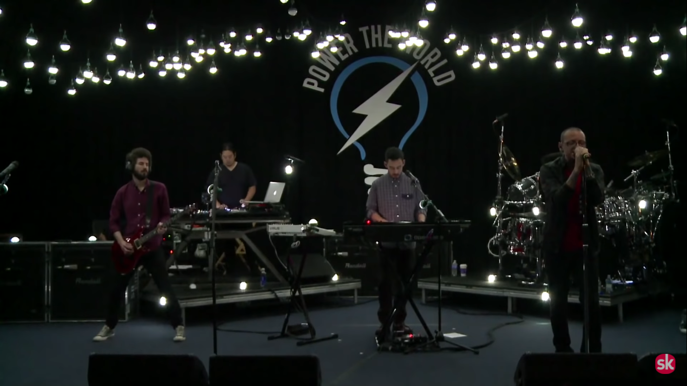

"When they finally released their debut album, Hybrid Theory, it sold a
staggering 14m copies, making it the world's bestselling album of 2001."
- The Guardian
"Meteora dramatizes the conflicts of father and son, man and woman, or
friend and friend — all from the vantage point of a young guy struggling
for harmony with or separation from an unnamed 'you'."
Linkin Park represents constant change. They say that they don't believe
in genres and just want to express themselves through this medium and
keep on experimenting with new ways to do it.
A Thousand Suns is still one of my all time favorite albums, mainly
because it is satisfying to listen to. It shows off their perfect
balance between rock, rap and experimental electronica, in addition to
their signature lyrics style.
Music For Relief, a nonprofit organization, was founded by the band in
2005 in response to the 2004 Indian Ocean tsunami. Since then, they have
raised over $8 million of relief funds.
In 2013, the band, along with Music For Relief, signed the pledge "Power
The World" to support the UN Secretary-General to help bring sustainable
energy solutions to 1 million families all around the world, mainly
focusing on underdeveloped countries like Nepal

Linkin Park playing a gig at a Power The World fundraiser campaign +
Social Conference in Rio, 2012
During the Power The World campaign the band raised money for a number
of causes, the most notable being Not Alone. Made in colaboration with
various artists like Hoobastank and Slash, the album Download to Donate
was targetted towards raising funds for the 2010 Haiti earthquake
In the first week, it shifted 50,000 copies in the United States alone
and was certified gold after only five weeks. The album stayed in the
Billboard 200 for 105 consecutive weeks, becoming the best-selling
album of 2001.
After the demise of Chester Bennington, the frontman of Linkin Park, and
a respected vocalist in all genres, the band hasn't recorded any music
till this day. However, recently, on the 20th anniversary of
Hybrid Theory, they officially released some previously unreleased demo
tracks from that era.